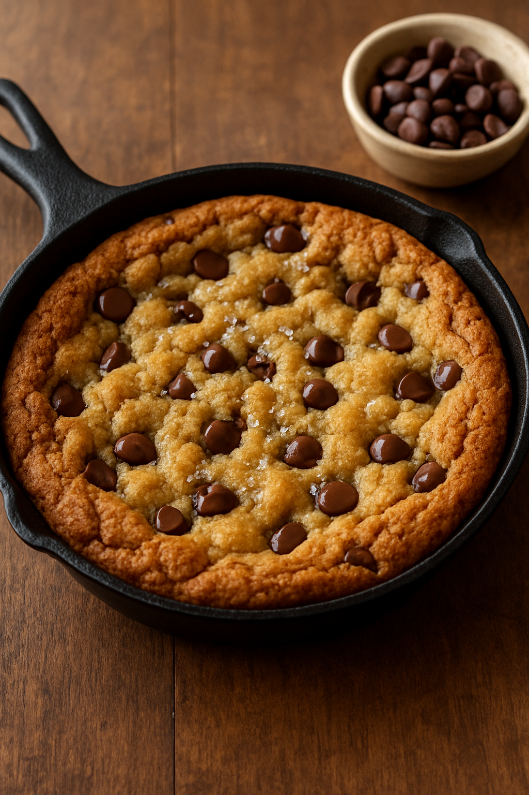

Simple, gooey deep-dish cookie recipe. A big, warm cookie baked in a skillet or ramekin. It's crispy on the edges and soft and melty in the middle.
Prep time: 10 minutes
Cook time: 20-25 minutes
Total: 30 minutes
Servings: 2-4 (or 1, because I know your ass is fat and lonely)